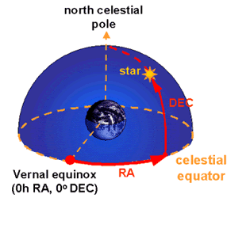

This is the preferred coordinate system to pinpoint objects on the celestial sphere. Unlike the horizontal coordinate system, equatorial coordinates are independent of the observer’s location and the time of the observation. This means that only one set of coordinates is required for each object, and that these same coordinates can be used by observers in different locations and at different times.
The equatorial coordinate system is basically the projection of the latitude and longitude coordinate system we use here on Earth, onto the celestial sphere. By direct analogy, lines of latitude become lines of declination (Dec; measured in degrees, arcminutes and arcseconds) and indicate how far north or south of the celestial equator (defined by projecting the Earth’s equator onto the celestial sphere) the object lies. Lines of longitude have their equivalent in lines of right ascension (RA), but whereas longitude is measured in degrees, minutes and seconds east the Greenwich meridian, RA is measured in hours, minutes and seconds east from where the celestial equator intersects the ecliptic (the vernal equinox).

RA and Dec are basically the lines of longitude and latitude projected onto the celestial sphere. The equator becomes the celestial equator, and the north and south poles becomes the north and south celestial poles respectively.
|

An object’s position is given by its RA (measured east from the vernal equinox) and Dec (measured north or south of the celestial equator).
|
At first glance, this system of uniquely positioning an object through two coordinates appears easy to implement and maintain. However, the equatorial coordinate system is tied to the orientation of the Earth in space, and this changes over a period of 26,000 years due to the precession of the Earth’s axis. We therefore need to append an additional piece of information to our coordinates – the epoch. For example, the Einstein Cross (2237+0305) was located at RA = 22h 37m, Dec = +03o05’ using epoch B1950.0. However, in epoch J2000.0 coordinates, this object is at RA = 22h 37m, Dec = +03o 21’. The object itself has not moved – just the coordinate system.
The equatorial coordinate system is alternatively known as the ‘RA/Dec coordinate system’ after the common abbreviations of the two components involved.